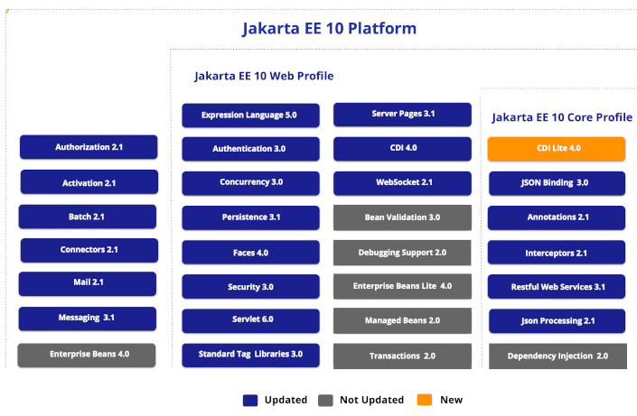

graph TB
Customer1[Customer]
Admin1[Administrator]
Manager1[Manager]
Customer1 --> Browser1[Web Browser]
Admin1 --> Browser2[Web Browser]
Manager1 --> Browser3[Web Browser]
subgraph WebServer1["Web Server"]
UI1[Presentation Layer<br/>Web Pages]
end
subgraph Server1["Application Server"]
BL1[Business Logic<br/>Order Processing, Inventory]
DAL1[Data Access<br/>Database Queries]
end
DB1[(Database)]
Browser1 -->|HTTP Request| UI1
Browser2 -->|HTTP Request| UI1
Browser3 -->|HTTP Request| UI1
UI1 -->|Internal Call| BL1
BL1 --> DAL1
DAL1 -->|SQL| DB1
style Customer1 fill:#e1f5ff
style Admin1 fill:#e1f5ff
style Manager1 fill:#e1f5ff
style Browser1 fill:#e1f5ff
style Browser2 fill:#e1f5ff
style Browser3 fill:#e1f5ff
style UI1 fill:#fff4e1
style BL1 fill:#ffe1e1
style DAL1 fill:#e1ffe1
style DB1 fill:#f0e1ff
1 CM3 - Applications distribuées
1.1 Références
1.2 Application monolithique
- Cas simple : l’application server sert toutes les requêtes avec une seule JVM
- mais pour la scalabilité et la fiabilité, on pourrait déployer plusieurs instances derrière un load-balancer
- Le code est organisé en couches : présentation, logique, accès aux données
- Chaque couche peut être matérialisée sous forme de package ou de module maven
- Pour limiter le couplage, le code peut être géré dans plusieurs repository git (order, inventory, …)
- Suffisant pour des applications peu complexes avec peu d’utilisateurs
- En général maintenu par une seule équipe de développement
Inconvénients :
- granularité élevée si on utilise plusieurs instances
- couplage fort
- violation du SRP :
- changement dans la logique d’inventaire
- => redéploiement qui impacte tous les utilisateurs
1.3 Application distribuée
graph TB
Customer2[Customer]
Admin2[Employee]
Manager2[Manager]
Customer2 --> Browser4[Web Browser]
Admin2 --> Browser5[Web Browser]
Manager2 --> Browser6[Web Browser]
subgraph Server2["Web Server - Customer Portal"]
UI2[Presentation Layer<br/>Shopping Cart UI]
end
subgraph Server6["Web Server - Employee Portal"]
UI3[Presentation Layer<br/>Employee Dashboard]
end
subgraph Server7["Web Server - Manager Portal"]
UI4[Presentation Layer<br/>Reports & Analytics]
end
subgraph Server3["Application Server 1"]
BL2[Business Logic<br/>Order Processing]
end
subgraph Server4["Application Server 2"]
BL3[Business Logic<br/>Inventory Management]
end
subgraph Server5["Integration Server"]
INT[Payment Gateway<br/>Shipping API]
end
DB2[(Orders DB)]
DB3[(Inventory DB)]
EXT[External<br/>Payment Provider]
Browser4 -->|HTTP| UI2
Browser5 -->|HTTP| UI3
Browser6 -->|HTTP| UI4
UI2 -->|Network Call| BL2
UI3 -->|Network Call| BL3
UI4 -->|Network Call| BL2
BL2 -->|Network Call| BL3
BL2 -->|Network Call| INT
BL2 -->|SQL| DB2
BL3 -->|SQL| DB3
INT -->|API Call| EXT
style Customer2 fill:#e1f5ff
style Admin2 fill:#e1f5ff
style Manager2 fill:#e1f5ff
style Browser4 fill:#e1f5ff
style Browser5 fill:#e1f5ff
style Browser6 fill:#e1f5ff
style UI2 fill:#fff4e1
style UI3 fill:#fff4e1
style UI4 fill:#fff4e1
style BL2 fill:#ffe1e1
style BL3 fill:#ffe1e1
style INT fill:#e1ffe1
style DB2 fill:#f0e1ff
style DB3 fill:#f0e1ff
style EXT fill:#e1e1e1
- application d’entreprise :
- plusieurs services utilisent l’application
- applications interconnectées
- les applications peuvent avoir des cycles de vie différents
- granularité fine pour la redondance
- si on a besoin de plus de ressources (CPU, mémoire) pour “Order Processing”, on peut ajouter des instances uniquement pour cette application
- équipes de dev différentes pour chaque fonctionnalité
1.4 Application distribuée - difficultés
- Performances
- Qualité de Service (QoS)
- Protocoles
- Persistance et gestion des transactions
- Sécurité : Authentification & Autorisations
- Gestion des objets “stateful”
- Coordination des déploiements
- QoS : pannes, interruptions pour déploiements. Monitoring : comment alerter en cas de panne ?
- Exemple d’objet stateful : panier utilisateur. Lorsqu’on a une redondance d’un service :
- Les requêtes doivent être adressées à la JVM qui possède l’objet
- Autre solution : réplication des objets (cache distribué)
1.5 Les frameworks d’entreprise
- topologie flexible
- intérêt: commencer en monolithique, découper si besoin
- propose des solutions pour chacune des difficultés
- standardise les développements
- Historiquement, Java EE s’occupait de tout
- Aujourd’hui : frameworks applicatif + orchestration de containers
- Spring boot + Kubernetes
- Quarkus (implémente une partie de Jakarta EE) + Kubernetes
- Demain, containers WebAssembly ?
Standardisation => recrutement et onboarding facilité. Un point crucial qui a fait le succès de Java.
Exemples de topologie :
- 1 serveur avec 1 JVM
- 1 serveur avec plusieurs JVM
- plusieurs serveurs dans le même datacenter,
- plusieurs serveurs dans des régions différentes.
Historiquement, Java EE gérait tous les aspects. Aujourd’hui, l’orchestration de containers (Kubernetes) peut gérer l’aspect infrastructure dans tous les langages. On va plutôt utiliser un Framework Java plus léger comme Spring Boot avec Kubernetes.
1.6 Communication Synchrone & Asynchrone
- synchrone = téléphone
- asynchrone = email
1.7 Synchrone
graph TB
UI1[Web UI<br/>Shopping Cart]
Order1[Order Service]
Inventory1[Inventory Service]
Payment1[Payment Service]
Email1[Email Service]
UI1 -->|1. Place Order<br/>WAIT| Order1
Order1 -->|2. Check Stock<br/>WAIT| Inventory1
Inventory1 -->|3. Stock OK| Order1
Order1 -->|4. Process Payment<br/>WAIT| Payment1
Payment1 -->|5. Payment OK| Order1
Order1 -->|6. Send Confirmation<br/>WAIT| Email1
Email1 -->|7. Email Sent| Order1
Order1 -->|8. Order Complete| UI1
Note1[User waits for<br/>entire chain<br/>to complete]
style UI1 fill:#e1f5ff
style Order1 fill:#ffe1e1
style Inventory1 fill:#fff4e1
style Payment1 fill:#e1ffe1
style Email1 fill:#ffe1ff
style Note1 fill:#ffffcc
- L’utilisateur doit attendre que chaque service traite les requêtes
- Si un des services échoue, tout échoue
- Avantage : on peut coordonner les transactions pour faire un Rollback (two-phase commit)
1.8 Asynchrone
graph TB
UI2[Web UI<br/>Shopping Cart]
Order2[Order Service]
Queue>Message Queue<br/>Order Events]
Inventory2[Inventory Service]
Payment2[Payment Service]
Email2[Email Service]
UI2 -->|1. Place Order| Order2
Order2 -->|2. Order Accepted<br/>Immediate Response| UI2
Order2 -->|3. Publish:<br/>Order Created| Queue
Queue -.->|Subscribe| Inventory2
Queue -.->|Subscribe| Payment2
Queue -.->|Subscribe| Email2
Inventory2 -.->|Process<br/>independently| Inventory2
Payment2 -.->|Process<br/>independently| Payment2
Email2 -.->|Process<br/>independently| Email2
Note2[L'utilisateur reçoit une réponse immédiate, <br/>les traitements continuent en tâche de fond.]
style UI2 fill:#e1f5ff
style Order2 fill:#ffe1e1
style Inventory2 fill:#fff4e1
style Payment2 fill:#e1ffe1
style Email2 fill:#ffe1ff
style Queue fill:#ffd4d4
style Note2 fill:#ffffcc
- On utilise un logiciel Middleware qui permet :
- de garantir que les messages sont persistés
- de recevoir des événements
- 2 modes : publish-subscribe, ou file FIFO
- Au cas où un message ne serait pas traité :
- le middleware possède des mécanismes de “retry”,
- il peut envoyer des alertes aux opérateurs
1.9 Communication Async/Sync - Technologies
- Navigateur <-> Serveur
- Synchrone : HTTP REST, GraphQL
- Asynchrone : WebSocket, ou polling HTTP
- Format de données : JSON
- Serveur <-> Serveur
- Synchrone : HTTP REST, gRPC, EJB, SOAP (ancien),
- Asynchrone : JMS, Apache Kafka, Rabbit MQ, Cloud-specific (AWS SQS, Azure Service Bus, Google Cloud Pub/Sub)
- Format de données : JSON, Avro, CSV, Parquet, Java serialization, Google Protobuf, XML, …
- JMS : Java Messaging Service. Interface implémentée par plusieurs fournisseurs tels que ActiveMQ, IBM MQ, Rabbit MQ
- gRPC : protocole Google
- Parquet, CSV compressé : pour gros volumes de données
1.10 REST - principes
- REpresentational State Transfer
- style architectural pour faire communiquer des ordinateurs sur le Web.
Principes :
- Interface uniforme
- utilisation d’URI pour identifier une ressource
- manipulation des ressources avec une représentation (JSON, XML, …)
- HATEOS : les réponses contiennent des liens vers d’autres ressources
- Découplage client-serveur
- Stateless
- Peut être mis en cache
- Système en couches
- (code à la demande)
- HATEOS : Hypermedia as the Engine of Application State
- découplage :
- le client ne sait pas où le serveur stocke les données
- le serveur n’a pas à connaître l’interface utilisateur du client
- chacun doit pouvoir être développé et “scaled” indépendamment
- stateless :
- pas d’état de session sur le serveur
- chaque requête est indépendante.
- les données d’authentification sont envoyées avec chaque requête
- Chacheable :
- le serveur doit indiquer si une réponse peut être cachée par le client et pour combien de temps.
- Système en couche : load balancers, cache, security, gateways, …
- Code à la demande : le serveur peut envoyer du code exécutable au client. Rarement implémenté.
1.11 REST - Verbes
Sémantiquement, les ressources sont des noms. Pour pouvoir interagir avec ces ressources, nous avons besoin de verbes. L’architecture REST préconise d’utiliser les méthodes du protocole HTTP, de la manière suivante :
| Verbe HTTP | Description | Idempotent | Cacheable ? | Utilisation typique |
|---|---|---|---|---|
| GET | Récupère une ressource ou une collection de ressources | Oui | Oui | Lire des données sans les modifier |
| POST | Crée une nouvelle ressource | Non | Non | Créer une nouvelle entrée, soumettre des données |
| PUT | Remplace complètement une ressource existante | Oui | Non | Mettre à jour entièrement une ressource |
| PATCH | Modifie partiellement une ressource existante | Peut-être | Non | Mettre à jour certains champs d’une ressource |
| DELETE | Supprime une ressource | Oui | Non | Supprimer une ressource |
| HEAD | Identique à GET mais sans le corps de la réponse | Oui | Oui | Vérifier l’existence ou les métadonnées |
| OPTIONS | Décrit les options de communication disponibles | Oui | Oui | Découvrir les méthodes supportées (CORS) |
Idempotent : envoyer la requête plusieurs fois n’a pas d’effet.
1.12 REST - Données
Les métadonnées sont envoyées ou reçues dans le header HTTP : format de données, compression, type de client, cookies, …
La réception de données depuis le serveur se fait dans le corps (body) de la requête HTTP.
- Le client envoie un header
Acceptpour indiquer le format de données souhaité - Le serveur renvoie un header
Content-Typequi détermine le type What is a MIME type des données renvoyées.- typiquement
application/json
- typiquement
L’envoi de données vers le serveur peut se faire :
- dans l’URL elle même :
GET /products/1. Typiquement :- identifiants
- version de l’API
- dans les paramètres d’URL :
GET /products?category=electronics&sort=price&order=asc. Typiquement pour des paramètres contrôlant :- la pagination
- le tri
- le filtrage
- ou dans le corps de la requête (uniquement pour POST, PUT et PATCH)
1.13 REST - bonnes pratiques
Une API est RESTful si elle respecte les conventions.
Structure d’URL cohérente :
GET /users # Liste tous les utilisateurs
GET /users/123 # Récupère l'utilisateur 123
POST /users # Crée un nouvel utilisateur
PUT /users/123 # Remplace l'utilisateur 123
PATCH /users/123 # Modifie partiellement l'utilisateur 123
DELETE /users/123 # Supprime l'utilisateur 123
GET /users/123/orders # Liste les commandes de l'utilisateur 123
GET /orders/456 # Récupère la commande 456Utilisation des codes retour HTTP :
200 OK # Succès
201 Created # Ressource créée (POST)
204 No Content # Succès sans contenu (DELETE)
400 Bad Request # Erreur client
401 Unauthorized # Non authentifié
403 Forbidden # Authentifié mais pas autorisé
404 Not Found # Ressource introuvable
409 Conflict # Conflit (ex: email déjà utilisé)
500 Internal Error # Erreur serveurPagination et filtrage :
GET /users?page=2&limit=20
GET /products?category=electronics&sort=price&order=asc
GET /articles?published=true&author=1231.14 REST - antipatterns
1.15 ❌ Anti-patterns courants
1.15.1 Verbes dans les URLs
❌ Mauvais :
POST /createUser
GET /getUser/123
POST /deleteUser/123
GET /getAllUsersBon :
POST /users
GET /users/123
DELETE /users/123
GET /users1.15.2 Utiliser GET pour modifier des données
❌ Mauvais :
GET /users/123/delete
GET /orders/456/cancelBon :
DELETE /users/123
POST /orders/456/cancel # ou PATCH avec status1.15.3 Retourner toujours 200, même en cas d’erreur
❌ Mauvais :
HTTP/1.1 200 OK
{
"status": "error",
"message": "User not found"
}Bon :
HTTP/1.1 404 Not Found
{
"error": "User not found",
"code": "USER_NOT_FOUND"
}1.15.4 URLs non cohérentes
❌ Mauvais :
GET /user/123 # Singulier
GET /users/123/orders # Pluriel
GET /User/123 # Majuscule
GET /api/v1/product # MélangeBon :
GET /users/123
GET /users/123/orders
GET /products/4561.15.5 Ignorer les standards de nommage
❌ Mauvais :
GET /users/123/GetOrders
GET /api/user-profile
GET /products_listBon :
GET /users/123/orders # kebab-case ou camelCase, mais cohérent
GET /api/user-profiles
GET /products1.15.6 ❌ Pas de versioning
Mauvais :
GET /users # Impossible d'évoluer sans casser les clientsBon :
GET /v1/users
GET /v2/users
# ou
GET /users (avec header Accept: application/vnd.api.v1+json)1.15.7 ❌ Exposer la structure interne
Mauvais :
GET /database/users_table/record/123
POST /execute_sqlBon :
GET /users/123
# L'implémentation interne reste cachée1.15.8 ❌ Réponses incohérentes
Mauvais :
GET /users/123 → { "user": {...} }
GET /products/456 → { "data": {...} }
GET /orders/789 → { "result": {...} }Bon :
GET /users/123 → { "id": 123, "name": "..." }
GET /products/456 → { "id": 456, "title": "..." }
# Structure cohérente partout1.16 Jakarta EE
- Ensemble de spécifications standard pour développer des applications d’entreprises.
- Différents projets open-source ou des éditeurs commerciaux implémentent tout ou partie des spécifications.
- Application servers : Eclipse GlassFish, IBM WebSphere Liberty, RedHat Wildfly, RedHad JBoss, Apache TomEE
- Historiquement : nommé Java EE, puis en 2018 Oracle l’a cédé à la fondation Eclipse
- => Java EE 8 est devenu Jakarta EE 8
1.17 Jakarta EE - Points forts
- Standardisation : Jakarta EE fournit une approche standardisée pour développer des applications d’entreprise.
- Productivité : Grâce aux API, les développeurs peuvent se concentrer sur la logique métier.
- Maturité : Jakarta EE est une solution mature, stable, éprouvée (depuis 1999)
- Gestion des ressources : par l’application server : pools de connection, noeuds du cluster, monitoring
- Principe fort : 1 besoin → 1 API
1.18 Jakarta EE - une galaxie d’API

APIs principales :
- CDI Core Dependency Injection : permet d’injecter des dépendances dans les objets
- Json Binding : transforme des objets en Json
- Restful Web Services
- Persistence (anciennement JPA) : mapping objet / BDD relationnelle